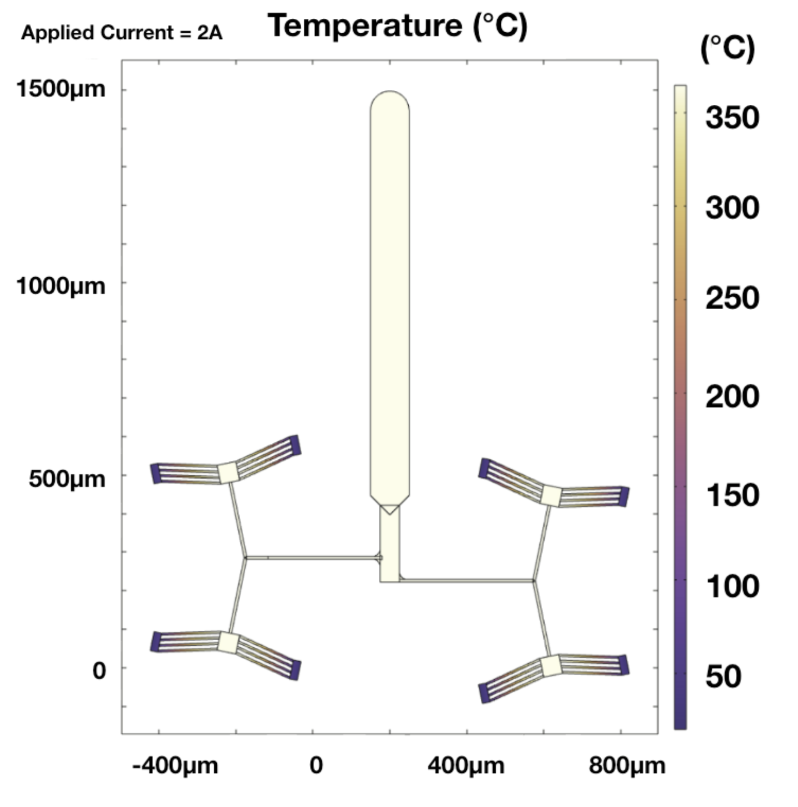
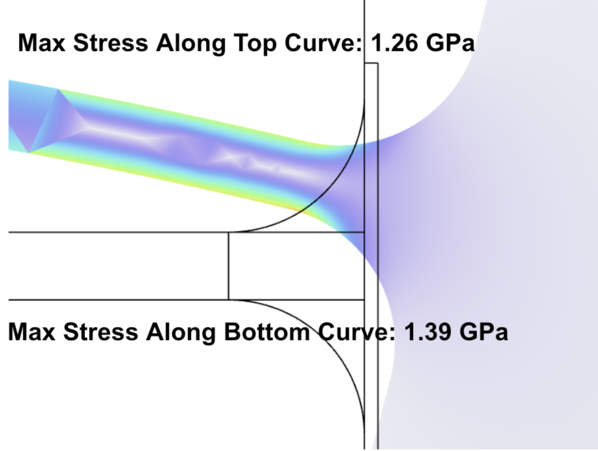
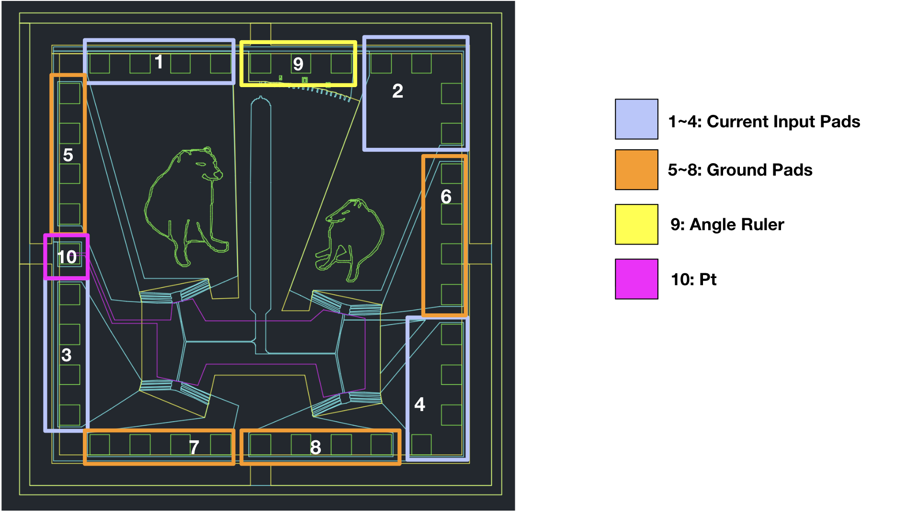
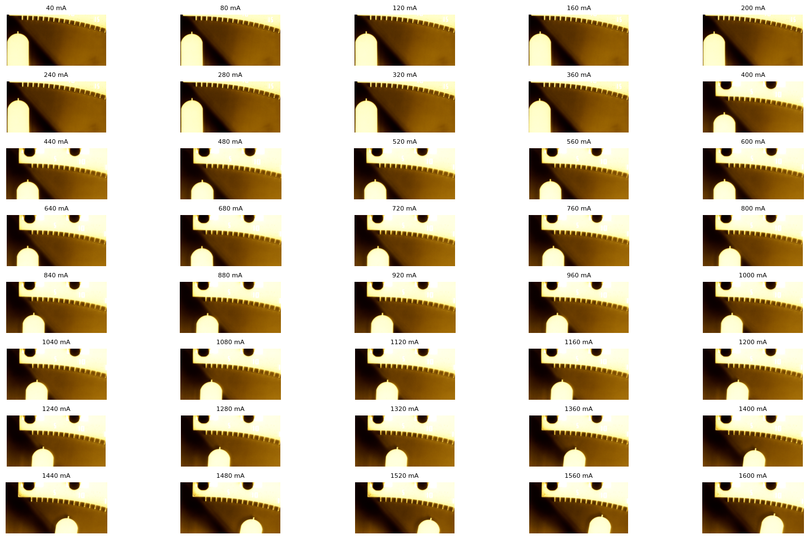
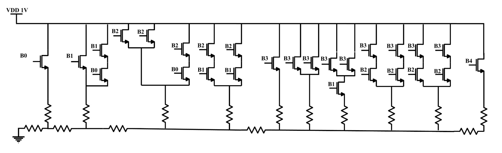
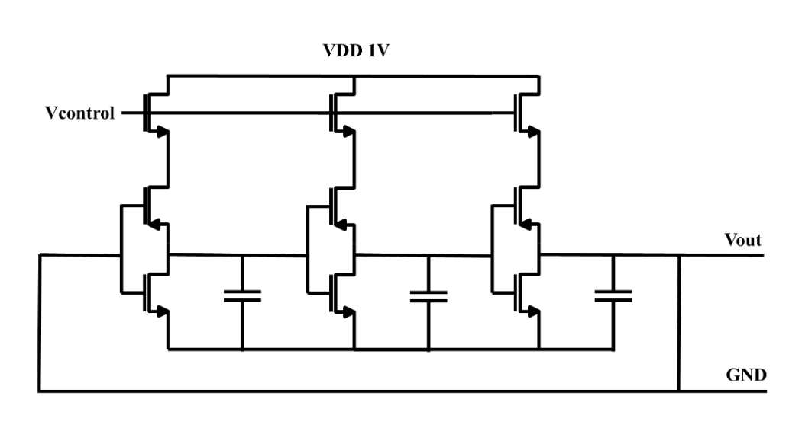
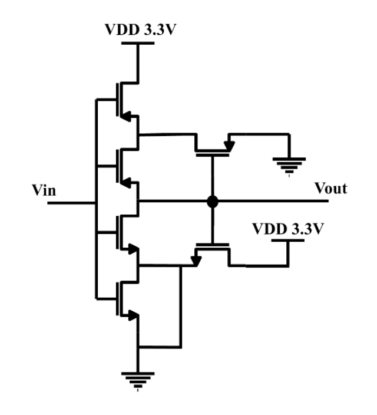

Thermally Actuated Optical Shutter
Abstract: Laser cutting and engraving systems need shutters to block continuous laser exposure, which otherwise causes thermal damage that limits resolution and precision. This project is a MEMS laser shutter with a tunable switching frequency, making it adaptable to a range of micro-laser applications. A microcontroller-driven, voltage-controlled oscillator sets that frequency precisely.

Figure I. Fabricated MEMS device under the Microscope.
MEMS Modeling, Fabrication and Testing:
The device is built on a silicon-on-glass (SOG) process: the glass layer anchors the structure, while the silicon layer both conducts current and flexes, which is what produces the capacitance change we actuate on.
Modeling: COMSOL simulations (Solid Mechanics, Electrostatics, and Heat Transfer) guided the design toward one goal: maximize deflection while minimizing the thermal time constant, so the shutter can switch fast enough to cover 40–140 Hz.
- Swept: chevron beam length, actuator beam length, and shutter length.
- Checked against safety limits: peak temperature below silicon's melting point, peak stress below its fracture strength, and every feature above the 5 µm minimum the fab process allows.



MEMS Mask Layouts: The mask (drawn in AutoCAD) has four layers:
- Glass — anchors the structure.
- Platinum — protects open areas from back-etching.
- Aluminum — the decorative "doge" engraving (visible in the micrograph above).
- Silicon — the modeled MEMS structure itself.

Testing: Each pad was first cleaned with 80 mA of current, then driven at a range of current levels on the bench. An angle ruler was used to read the tip displacement at each setting.

The shutter operating normally, driven at 1.6A split across its 4 chevrons:
...and a failure case: the shutter burning out at just 1A, well under the 2A it was designed to handle.
Circuits
A digital voltage input is turned into a precise switching frequency through three on-chip stages, plus an off-chip boost stage to drive the shutter:

1. A ladder DAC converts the digital input to an analog voltage; each transistor's W/L ratio was hand-tuned for the output frequency precision we needed.


2. A voltage-controlled oscillator turns that voltage into a sine wave at the matching frequency.


3. A Schmitt Trigger squares off that sine wave, which switches faster and cuts latency compared to driving the shutter straight off a sine.


4. Off-chip, a boost converter steps the Schmitt Trigger's 3.3V output up to about 5V to drive the shutter.